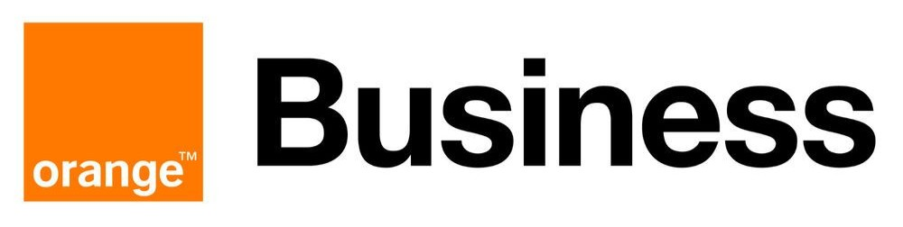
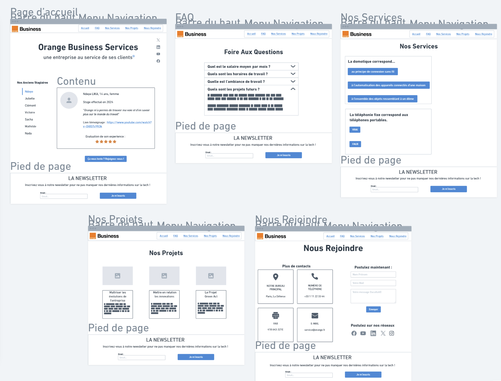

Site Web de l'entreprise Orange Business Services
Description
Le projet pédagogique était de créer un site web institutionnel d’une Entreprise du Secteur Numérique accessible aux élèves de troisième en recherche de stage. L’entreprise demandait ce site web pour permettre de communiquer avec son environnement et pour assurer son évolution. Ce site web devait être réaliser par nombreuses étapes imposées par notre commanditaire. Ce commanditaire, interprété par notre professeur, communiquait par mail.
Tout d’abord, nous avons dû réaliser une fiche de renseignements pour le recueil du besoin. Cette fiche de renseignements regroupe l’ensemble des informations qui sont présentées sur le site web. La première partie de ce document comporte des informations sur la présentation générale de l’entreprise. C’est alors que nous avons consulté le site institutionnel d’Orange Business Services afin de sélectionner les informations qui nous semblaient importantes pour présenter notre commanditaire aux élèves de 3ième. Ces informations permettent de comprendre quelle est l’activité de l’entreprise, les produits et/ou services qu’Orange propose…
Dans un second temps, le sujet porte sur la transition numérique et écologique. Cette partie présente les actions mises en avant par Orange Business Services pour améliorer son empreinte. En effet, les entreprises sont soumises à des contraintes de plus en plus fortes, en termes de performance mais aussi en termes de développement durable et d’éthique. Elles ont la possibilité d’utiliser différents outils pour mettre en valeur leur activité et elles doivent également se mettre en conformité avec les législations françaises et européennes. Elles sont aussi encouragées à réfléchir à de nouvelles formes d’organisation.
Après le recueil de données et la validation des commanditaires, nous sommes passées à la conception et l’implémentation du site web. Cette partie porte sur la conception (sous forme de maquette). Nous avons proposé une architecture de notre site en suivant une approche de conception avec l’outil Whimuscal. Nous avons eu deux réunions pour avoir le retour du commanditaire. Il nous a permis d’améliorer l'adéquation entre les besoins exprimés par le client et la maquette que nous lui avons proposée.

Dans la dernière partie, nous avons réalisé le site internet de l'entreprise à destination d'un public non technique en présentant les informations fournies par l'entreprise sous une forme vulgarisée comprise par le plus grand nombre et recueillies lors de la première étape. Une attention particulière a été portée sur l'adéquation entre notre site et la conception que nous avons réalisée en amont. Le site a été présenté au commanditaire lors d’une petite réunion où nous avons dû le vendre pour qu’il l’achète.
Organisation
Tout au long du projet, nous nous sommes séparé les étapes. Tout d’abord, je me suis proposé comme chef de groupe. J’ai pris les responsabilités du groupe et l’organisation du planning. Nous avons commencé par faire un google doc pour mettre en commun nos recherches sur la première étape. Chacun avait sa partie et pouvait compléter/corriger les autres. A la fin des récoltes des données, nous sommes passées à la phase de rédaction où chacun a pris sa partie l’a rédigé pour les commanditaires et pour les élèves de troisièmes. Avec tous ces documents, un college et moi, nous avons fait le fichier pdf demandé. Puis nous sommes passés au maquettage et au site web où nous avions chacun une page à faire. Pour ma part, j’ai fait la page des projets. Enfin nous avons tous ensemble présenté et parler sur ce grand projet.
Compétences acquises
Lors de ce projet, j'ai pu acquierir de nombreuses compétentes. Tout d'abord, j'ai pu travaillé sur mes compétences de leadeuse pour gérer le groupe, mais aussi sur tout ce qui est organisation et plan de construiction par rapport au échéance demandé. J'ai pu acquierir plus de polyvalence avec l'utilisation des différents languages.
Acces au projet
Conclusion
Ce projet nous a montré le travail qui t’était fait en entreprise pour faire un site web pour un commanditaire. Ces réalisations était très intéressante pour le travail en équipe, les gestion de taches, les relations clients ou encore les connaissances en matière de programmations.